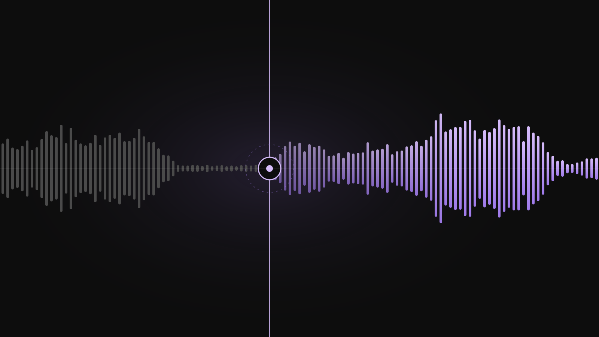
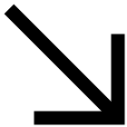

OrgaAI
Most of this one I can't tell you. OrgaAI is a conversational AI programme under NDA: the product, the models, the numbers and the people stay inside. What's left is the shape of the work.
I worked on the audio and transcription pipeline — the stage that turns raw speech into something the rest of the system can reason over. Unglamorous, and load-bearing: whatever mistake it makes, everything downstream inherits.
The one figure I'm cleared to give is a ratio. The pipeline was transcribing audio it already held transcripts for; removing that duplication made it roughly ten times faster, with nothing lost downstream. It came from questioning an assumption rather than from optimising code. Which assumption, and what it was costing, stays inside.
There was also a Slot Attention prototype. That is the entire sentence I'm allowed.
Role
AI/ML Developer
Focus
Audio & transcription pipeline
Result
~10× faster pipeline
Disclosure
Under NDA — specifics withheld

